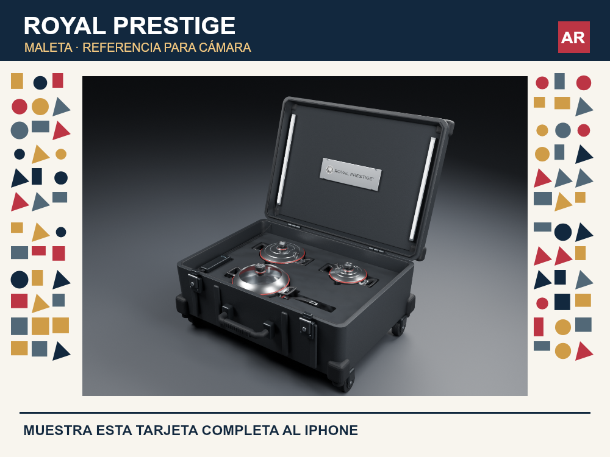

Abre la tarjeta de referencia en otra pantalla o imprímela. Apunta la cámara del iPhone a la tarjeta completa.

Conserva la tarjeta visible. Toca una pieza, sácala, muévela o gírala y guárdala en su compartimento. La imagen es la referencia de posición; esta vista no detecta el suelo por sí sola.
La cámara se procesa en este dispositivo. No se graba ni se envía video.
Buscando la tarjeta…
Arrastra la carcasa para mover la maleta completa. Retira las tapas primero. Para devolver una pieza, toca Guardar o acércala a su espacio.